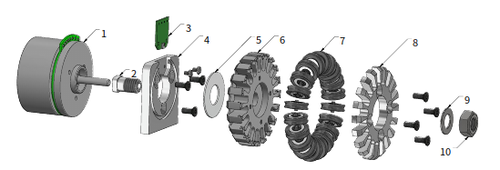

TIGERs Mannheim - 競合チーム分析¶
最終更新: 2025年6月22日（JapanOpen2025後）
分析対象: TIGERs Mannheim SSL チーム
参考資料: Team Description Papers (TDP) 2018-2023
TDP2023¶
https://tdp.roboteamtwente.nl/tdps/144?ref=year
軌道生成¶
ゴールキーパーのような、ゴール地点で速度ゼロにならなくても場所と時間さえあっていればOKというケースに対応して有効守備範囲を広げている。
TDP2022¶
https://tdp.roboteamtwente.nl/tdps/241?ref=year
ハードウェアアップデート¶
- ドリブラのダンパ
- 自分のマーカーを読み取るシステム
ビルトインなシミュレータについて¶
- grSimは低レイヤー制御も含むので、AIの検証用に理想的な動作をするシミュレータを作った（2013~）
- 基本的に2Dだが、チップキックだけは3D対応
- デバッグが簡単
- ステップ実行可能
- 状況を巻き戻して再実行も可能
- シミュレータの比較
- grSim
- ER-Forceのもの
- シミュレータを使ったテストも簡単に作れる
攻撃用ドリブル¶
- 2021年大会の優勝で大きな役割を果たした
- ペナルティエリアの平行線上でサンプリングして評価
- サンプリングする点はドリブル最大距離まで
- ゴール可能な最近傍点を選んでそこまでドリブルする
視覚化¶
- ROSのvisualization_msgsのMarkerみたいなコンテキストを含まない視覚化プロトコルの定義
- Rootsにも影響を与えている
データの記録¶
- 1試合のログは数GB
- 圧縮したら数百MB
- ログ再生機でコピーしたらロボット・フィールド状態がjson形式でクリップボードに
- シミュレータ上でペーストすると状態が再現される
テスト¶
シミュレータを組み込んでのテスト
- パスカット
- リダイレクトシュート
ルールのテスト¶
- 対戦相手なしでFORCE_START：10s以内にゴールできるか
- KICKOFF: 11s以内にロボットが動き出すか？
- PENALTY: ロボットが動き出し、30s以内にゴールしてHALTになるか外してBallPlacementになっているか？
- FORCESTART: ボールが蹴られて動き出すか？
- Pass: ロボットが時間内に目的地に到着するか？
- STOP: STOP中にロボットが最大速度を超えて移動していないか？禁止エリアに入らないか？
- BallPlacement: 時間以内に成功するか？
- KICKOFF: 相手無しで11s以内にゴールできるか？
- INDIRECT FREE: 6s以内にロボットが移動するか？
TDP2020¶
https://tdp.roboteamtwente.nl/tdps/89?ref=year
ハードウェア v2020(Gen5)¶
- 前のバージョンはv2019
- メカ中心のアップデートで回路はほぼ同じ
車輪のアップデート¶

- v2019の車輪
- 3Dプリント PLA製
- 直径33mm
- かなり小さいが、車輪が90°間隔で配置できる
- チームフィールドでは問題なかった
- シドニー大会で壊れまくった
- 毛深いカーペットと塗装されたラインが原因
- ホイールカバーが壊れてサブホイールが定期的に欠落する
- サブホイールが欠落するとホイールベースがカーペットに接触して摩擦で溶け始める
- PLAは60℃で溶ける
- サブホイールが欠落するとホイールベースがカーペットに接触して摩擦で溶け始める
- v2020の車輪
- アルミ製ホイール
- 直径62mm
- 安価に製造するように変更した結果、大きくなった
- v2019をアルミで削り出すと高価
- 90°間隔で配置できない
- ダイレクトドライブで駆動
- サブホイール
- サブホイールは20個
- Xリング
- 設置点が2箇所でスムーズな動きにつながる
- 摩擦もOリングより優れる
- v2016の車輪にも使っていたが、ベアリング部分も摩耗でガタがでて結果的に振動が大きくなった
- 今回はしっかりベアリングを使って対策した
キッカーのアップデート¶
- ダンパはTPUの3Dプリンタ製
- プランジャはスチールとアルミの組み合わせ
ドリブラのアップデート¶
- IRセンサアレイ搭載
- モーターの変更
- v2019: 高速で小型なモーターを減速
- すごいうるさかった
- v2020: 減速なしで55W定格17000rpmのモーターを短期過負荷モードで使用
- v2019: 高速で小型なモーターを減速
カバー¶
- PETG製 1.2mm厚
- 色々な素材を試したが、PETGが最もよかった
- 適度に柔軟性を持ち、衝撃吸収できる
- 接着剤を塗布している
- カバーが破損しても接着剤で保持される（ガラスフィルムみたいな感じ？）
TDP2019¶
ロボットのアップデート¶
v2016からv2019までのアップデート
- モーターが50Wから70Wに
- エンコーダが光学式から磁気式に
- ホイールを32%小型化
- これにより、ホイールを90°間隔で配置できるようになった
- カメラ3台
- 視覚オドメトリ用上方カメラ2台
- ドリブル用下方カメラ1台
- SBCはJetson TX2かラズパイ3を切り替えられる
経路計画¶
前提¶
ここに書いてあることはTDP2016が詳しい
- 速度ではなく、目標位置を送信している
- Vision情報はロボットに転送されている
- 回避は、最終目的地よりも優先度の高い、中間目的地を設定することで実現している
- ロボット内でスキルを実行している？（100Hzで更新）
アルゴリズムの概要¶
- 目的地までの暫定経路を生成
- 衝突チェック（なければ終了）
- 適当な経路を複数生成
- 生成した経路を評価して、ペナルティが最も小さい経路を選択
- 中間目的地を使った経路も生成して評価
- 基本敵には中間目的地を使った経路を選択。ペナルティが大幅に小さくなる場合は、4.で選択した経路を選択
中間目的地の生成方法¶
経路計画時の障害物回避のため、以下の方法で中間目的地を生成：
- フィールド分割: フィールドをグリッド状に分割し、各セルの通行可能性を評価
- A*探索: グリッドベースのA*アルゴリズムで最適経路を探索
- スムージング: 生成された経路を曲線補間で滑らかにする
- 動的更新: ロボット・ボール位置の変化に応じてリアルタイム再計算
ペナルティの計算方法¶
経路評価のペナルティ関数は以下の要素を考慮：
- 距離ペナルティ: 目標地点からの距離に比例
- 障害物ペナルティ: ロボット・ボールとの近接距離に反比例
- 速度ペナルティ: 急激な方向転換や加減速に対するペナルティ
- ルールペナルティ: ペナルティエリア侵入等のルール違反リスク
パスターゲットの評価の改良¶
従来、パスターゲットの評価値は一つしかなかったが、いかに分割した。
- リダイレクトシュートできる確率（Redirect Goal Shot Score）
- パスをが通る確率(Pass Score)
リダイレクトシュートできる確率¶
リダイレクト角度スコア¶
- リダイレクト角度が最重要視される
- 45°以下ではでスコアが飽和
- 最大角度(設定値)を超えるとスコアが0になる
- 45°~最大角度の範囲で線形にスコアが減少
距離スコア¶
- 遠いほどスコアが低くなる
- 一定距離を超えるとスコアが0になる
距離が遠いほど精度が低下するため、以下の要素で総合評価：
- 基本距離スコア: 至適距離での最高スコア、遠距離で線形減少
- 角度補正: パス角度とゴール角度の関係性を考慮
- 障害物影響: 敵ロボットによる遮蔽率を反映した減点
TDP2018¶
ドリブラのアップデート¶
ドリブラの自由度を増やして、ボールの衝撃吸収とボールのドリブル性能の両立を図った。
AOffensiveActionMoves¶
- ForcedPass
- DirectKick
- ClearingKick
- StandardPass
- LowChanceKickGoToOtherHalf
- KickInsBlue
- RedirectGoalShot
- RedirectPass
- Receive